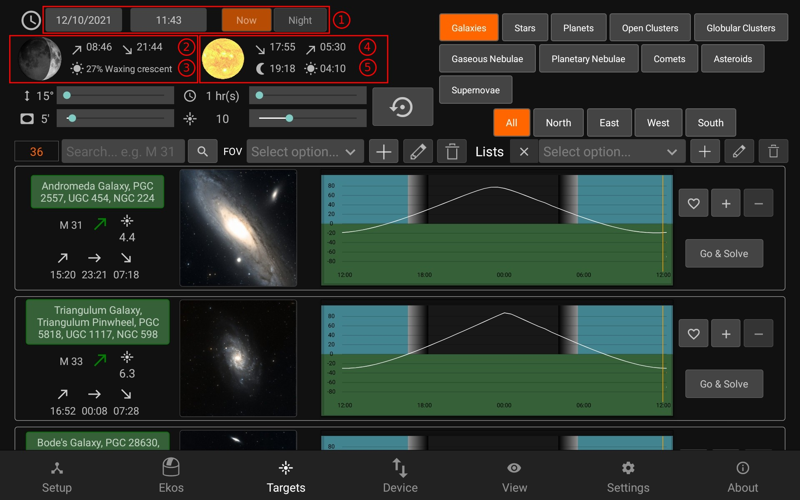
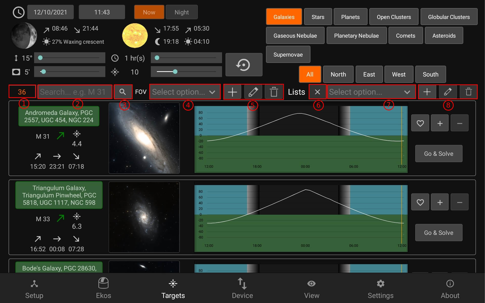
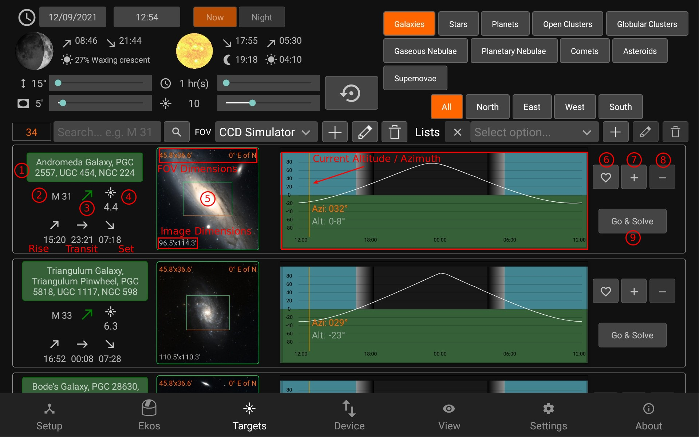

Targets
Target Module provides an interface to filter and search sky objects and save them in lists

- Date & Time: You can preview the targets available at a different date or time by changing the settings (This option is disabled if Ekos is running)
Moon Visibility
- Moon rise/set times
- Ilumination %
Sun Visibility
- Sunset/ Sunrise
- Dusk /Dawn

Filters
- Minimum alititude for the duration
- Minimum time object is visible
- Minimum Field of View (FoV)
- Maximum Magnitude
- Reset All Filters (Resets all the filters to their default settings)
- Filter the objects by type
- Filter the objects by their direction

Search Results
- Number of results
- Filter by object name (only filters currently displayed results)
- Search button that searches through every object (useful if unsure about the object type)
When a search is done, the result is added to "My Searches" List, which displays all previous search results
FOV Profile (required to display FOV Overlay and use the Framing Assistant)
- FOV profile dropdown
- Add | Edit | Delete (FOV profile)
- Exit list (returns to normal targets browsing)
Lists
- Lists dropdown
- Add | Edit Name | Delete (List)
Adding an FOV profile in (5) opens up the following panel:

After setting the Focal Length, Camera W/H and pixel W/H, the FOV can be calculated by pressing the Calculate FOV button.

Target Info
- Object full name
- Object short name
- Rise:green | Transit: Yellow | Set: Red
- Magnitude
- Object Image and FOV Overlay
- Altitude vs Time plot (Background shows the visiblity throughout the day)
(6) Add to Favorites
(7) Add to a list
(8) Remove from current list
(9) Go & Solve: Go to object and plate solve (required to use Framing Assistant)
The border of each target displays it's status:
- Idle: Grey
- Plate-Solving: Yellow
- Skewing to target: Purple
- Plate-solving successful and target is centered: Green
Plate-solving unsuccesful or beyond acceptable accuracy threshold: Red
Top open the framing assistant, make sure to have selected an FOV Profile and press Go & Solve. StellarMate will command the mount to slew to the target location. This is indicated by a magenta border around the target. Once Slew is complete, the alignment process begins which is indicated by a yellow border. A red border indicated alignment error or alignment is not within threshold. Please wait until the solver iterates to center the target exactly in the center of the sensor. Once this is done, the border turns to Green. Now that the plate solving is complete, you may proceed to use the Framing Assistant tool that helps you in adjustment the orientation of the camera to match your desired orientation either manually or automatically if a rotator device is detected.
Once the status turns to green (1), press the image (2) to open the Framing Assistant

- The framing assistant has an automatic option for rotating that can be used if a Rotator is being used.
- You can adjust the rotation with the slider
- The rotation offset is shown where the green frame is the current and blue is the desired frame